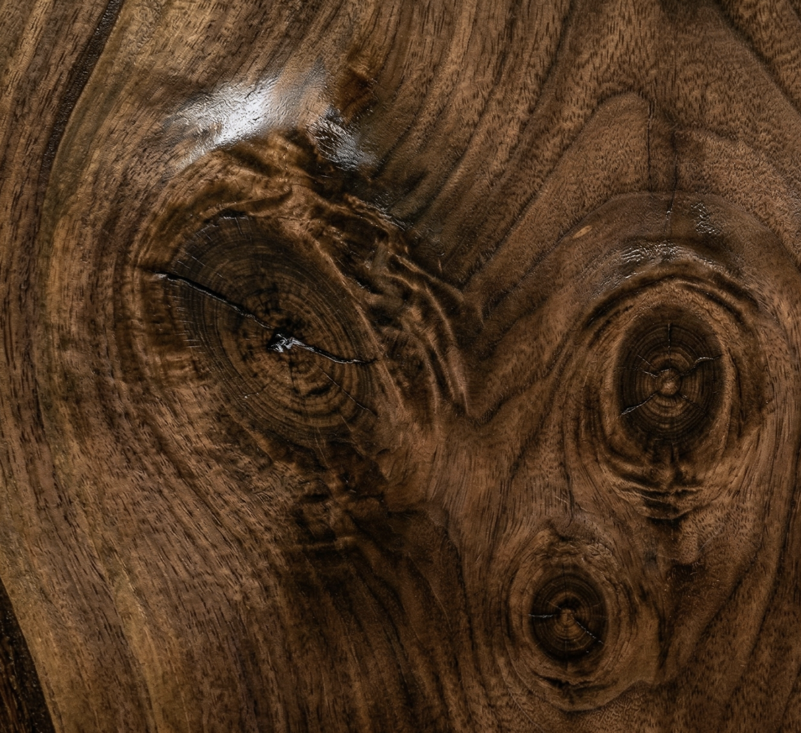
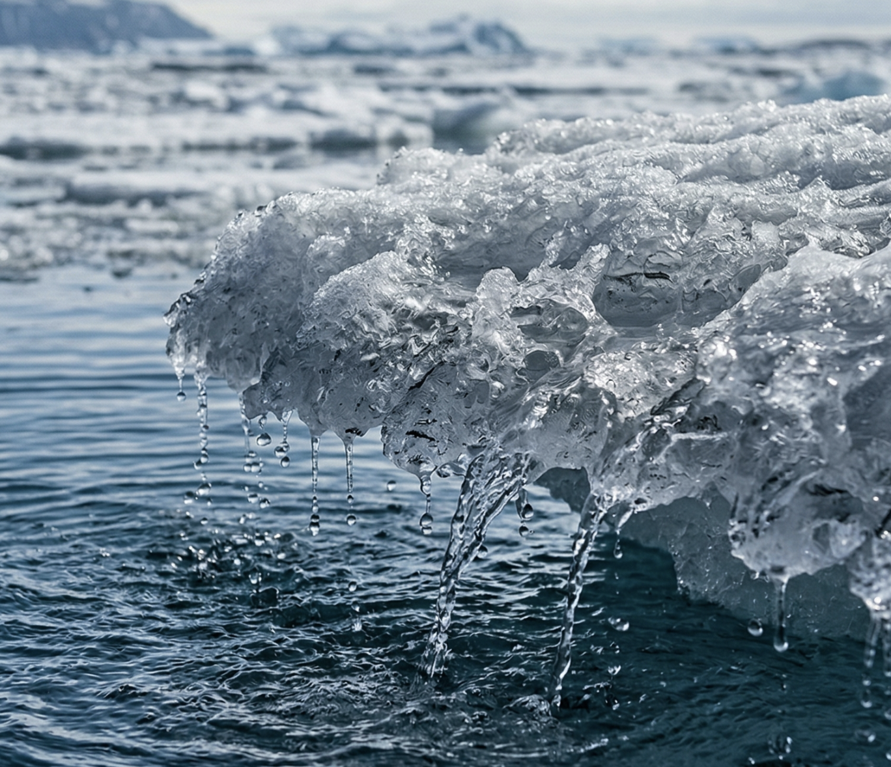

Foundations
Photography
Natural macro textures — warm wood, cool ice and water. Organic and material, never tech cliché, echoing the warm (marron / beige) and cool (bleu) palette.
Direction


Do & don't
Do — natural materials, macro detail that reveals grain and structure, restrained and true-to-life colour drawn from the warm and cool palette.
Don't — stock-photo people, tech gadgets and devices, or saturated filters and heavy grading.